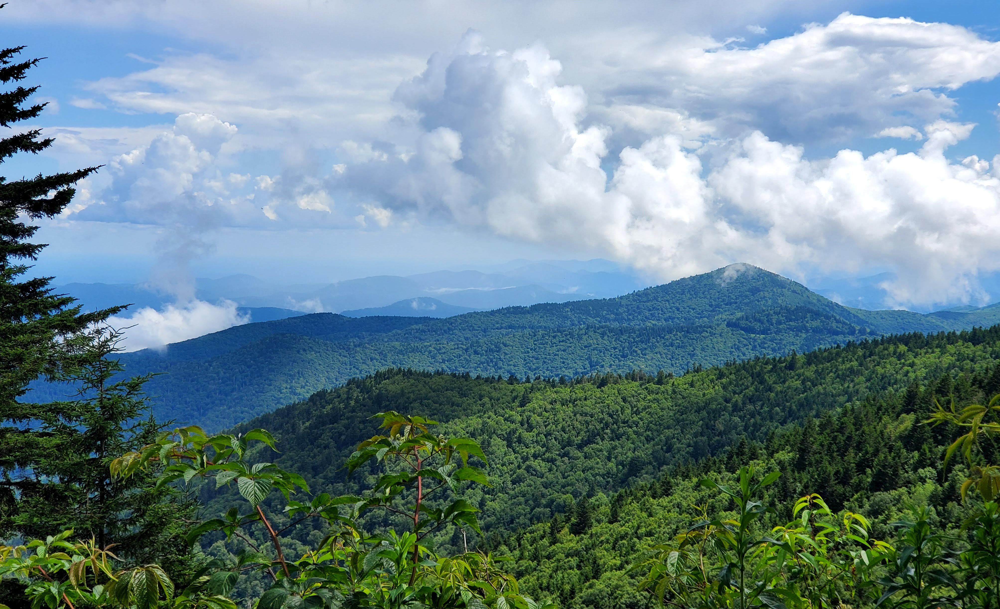
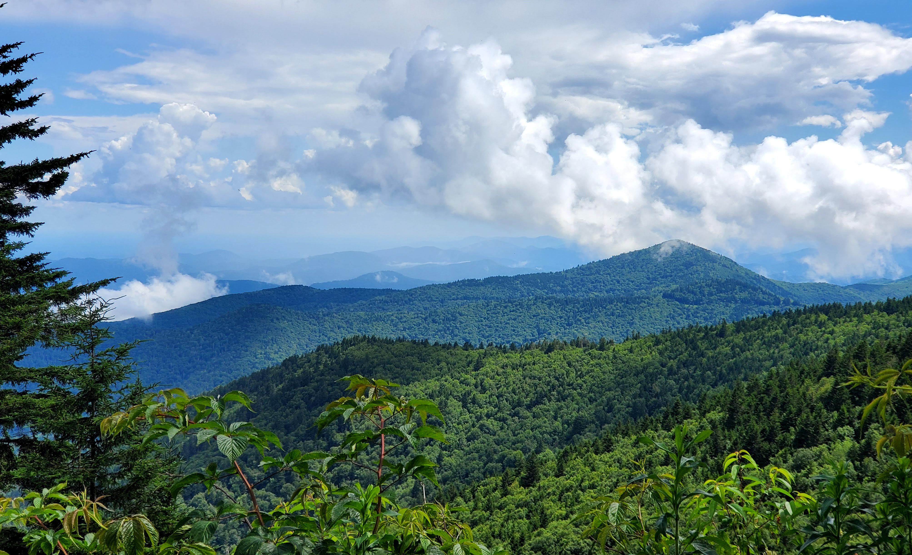
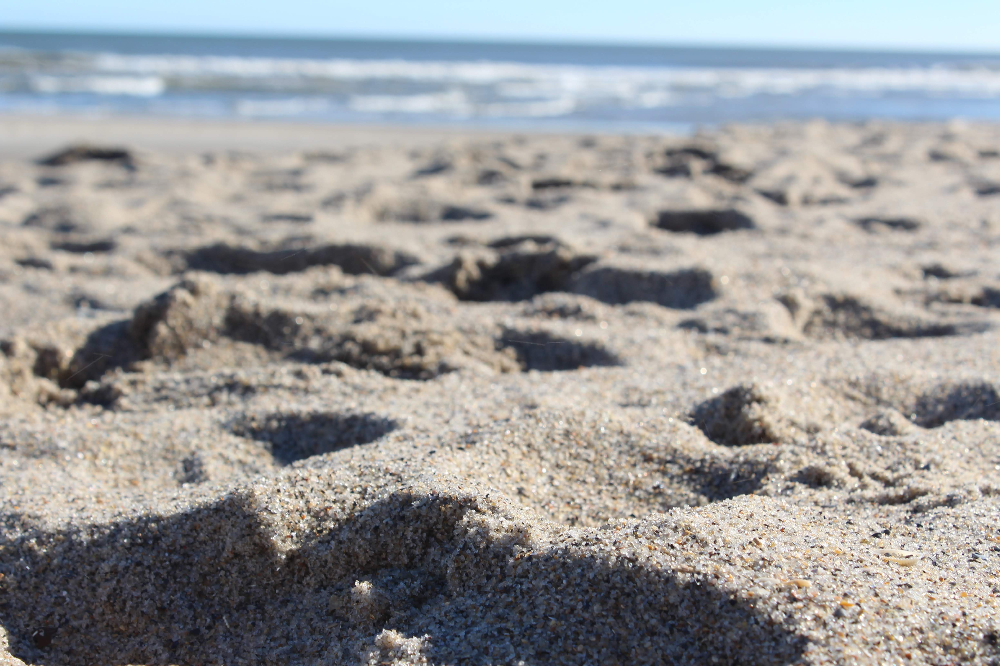
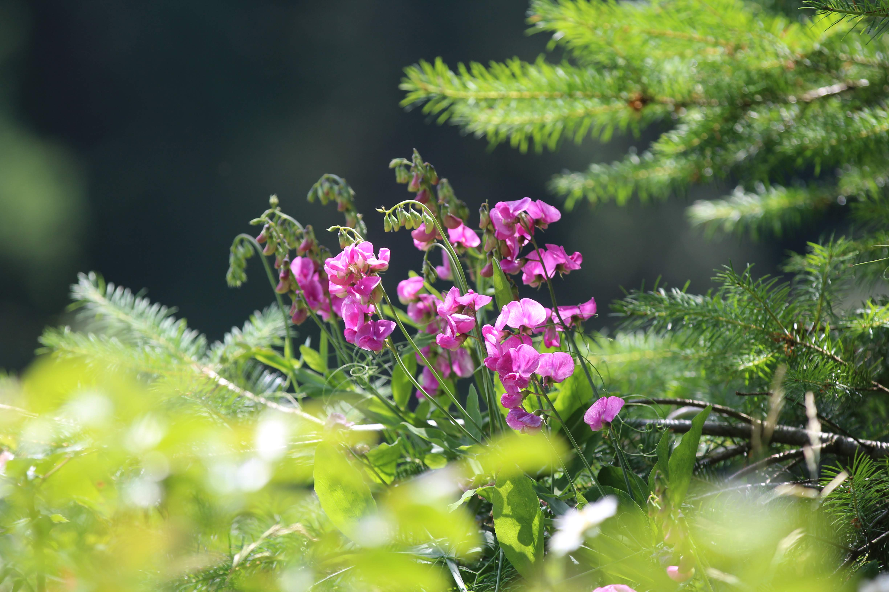
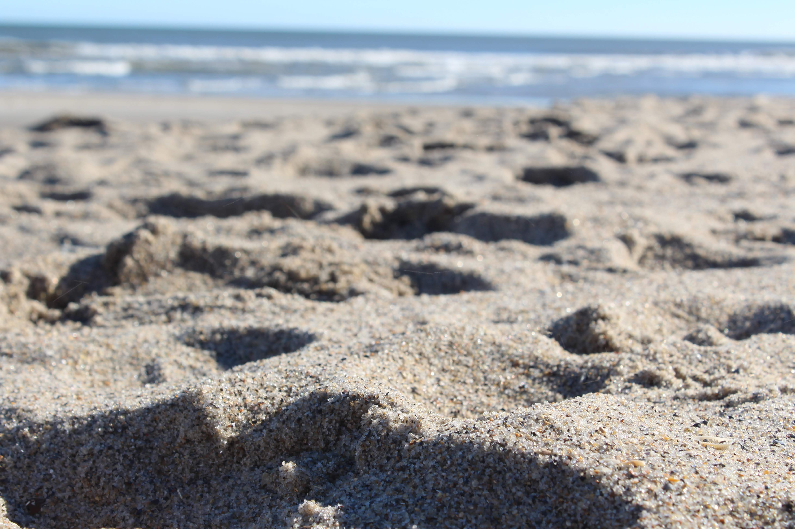
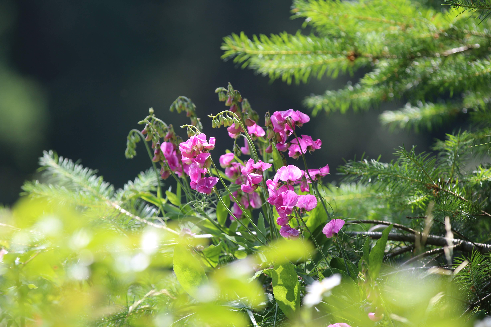

I’m a climate scientist-in-training passionate about developing safe,
equitable solutions to the climate crisis.
As a Ph.D. candidate and research assistant, my research focuses on climate
intervention, agriculture impacts, and applying machine learning to
climate data.
I’m committed to making complex science accessible and actionable
through clear visualizations, communication, and policy engagement.
Outside the lab, I work to bridge science and society as an AGU Local
Science Partner and Solar Geo Society ambassador, engaging with
decision-makers, media, and the public.
I strive to advance climate solutions from multiple angles—research,
science communication, and policy—because time is short, and this is our
moment to build a better future.

 

 


